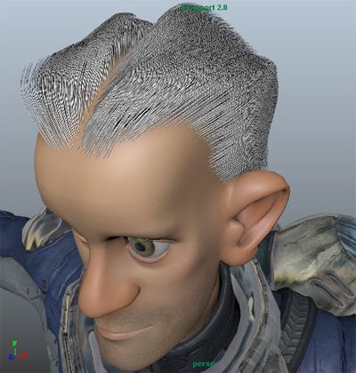
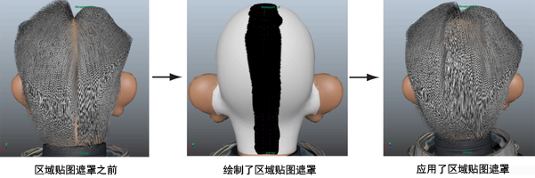

若要创建角色头发部分，您可以创建基于 Ptex 的区域贴图。区域贴图提供了覆盖导向插入放置方法和曲线行为的方式。若要沿头皮中心创建头发部分，请以两种不同的颜色绘制头皮两侧，这将定义贴图的两个区域。贴图将防止样条线与已着色的绘制区域相交。这将强制使样条线处于创建头发部分的绘制区域的任一侧。
- 清除预览并禁用“自动更新预览”(Update Preview Automatically)。
- 单击“基本体”(Primitives)选项卡。
- 在“区域控制”(Region Control)部分中，单击“区域贴图”(Region Map)旁边的此图标
 ，然后从出现的菜单中选择单击“创建贴图”(Create Map)。
，然后从出现的菜单中选择单击“创建贴图”(Create Map)。 - 在“创建贴图”(Create Map)窗口中，键入贴图的名称，如 part_Region。
- 进行下列设定：
- 将“贴图分辨率”(Map Resolution)设置为 30。
这将逐面设置 Ptex 贴图的 Texel 数。
“起始颜色”(Start Color)设置为“红色”(Red)。
绘制区域贴图时，选择两种容易区分的颜色很重要，如红色和蓝色。您选择的颜色未与任何属性值关联。
- 将“贴图分辨率”(Map Resolution)设置为 30。
- 在“工具设置”(Tool Settings)窗口的“颜色”(Color)部分中，单击颜色样例并选择蓝色。
Maya 将自动设置区域贴图绘制的其他“3D 绘制工具”(3D Paint Tool)设置。
- 使用“3D 绘制工具”(3D Paint Tool)将一半头皮区域绘制为蓝色。 注： 头皮一侧为红色且另一侧为蓝色，这很重要。确保未将红色一侧头皮中的面片误绘制为蓝色。否则，区域贴图将无法正常工作。

- 单击此
 图标保存 Ptex 贴图。
图标保存 Ptex 贴图。 - 在“区域控制”(Region Control)部分中，将“区域遮罩”(Region Mask)设置为 1.0。
将“区域遮罩”(Region Mask)属性设置为 1.0 会对网格启用“区域贴图”(Region Map)。
创建头发部分后，您可能需要创建“区域遮罩”(Region Mask)以沿头后部覆盖头发部分。这样，头发部分将始于前部细线并止于头顶。
- 预览描述。 
创建区域遮罩覆盖头发部分
- 在“区域控制”(Region Control)部分中，单击 “区域遮罩”(Region Mask)旁边的此图标，然后从出现的菜单中选择“创建贴图”(Create Map)。
- 在“创建贴图”窗口中，进行下列设定：
- 将“贴图分辨率”(Map Resolution)设置为 30。
“起始颜色”(Start Color)设置为“白色”(White)。
这会将贴图值设置为 1，将保持网格上区域贴图的效果。然后可以在您需要覆盖区域贴图的网格区域上绘制黑色。
- 将“贴图分辨率”(Map Resolution)设置为 30。
- 在“工具设置”(Tool Settings)窗口中，将 “颜色”(Color)设置为“黑色”(Black)。
使用用于其他基于 Ptex 的遮罩的笔刷设置绘制区域遮罩。请参见使用 Ptex 贴图创建细线。
- 使用“3D 绘制工具”(3D Paint Tool)绘制您需要区域贴图遮罩的区域。
- 保存贴图并预览描述。 